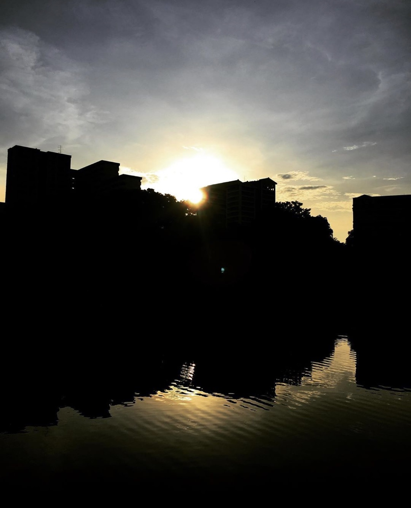
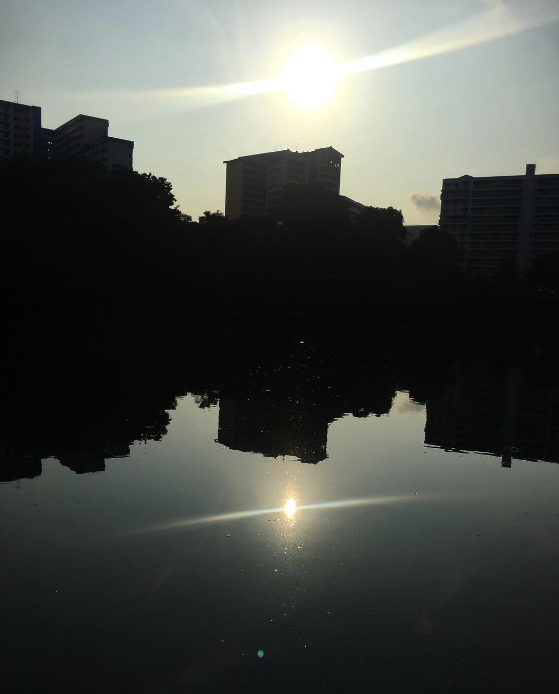

Things To Do in the Day
Keep Fit!
Pang Sua Pond is just right for a nice jog, walk, or cycle as it is connected to two Park Connectors - Pang Sua PCClick here for the route! (6.0km long), and Bukit Panjang PCClick here for the route! (1.4km long).
Even older people enjoy exercising at Pang Sua Pond. As early as 6.30am, you will be able to hear dance music by the Pang Sua Pond as people dance together to keep fit. The video below shows you exactly what I mean! 😜
Animal Watch!
Because it is regularly cleaned, Pang Sua Pond is home to many terrapins and fish! In fact, I think there are easily over 100 terrapins! There is no "No Feeding" sign so people come and feed them bread quite often. Usually, if you come early enough at between 7 to 8 am, there will be flocks of birds that fly around the pond and swoop down to the pond (just like the ones in the gif on this page) to catch tiny fish! Occasionally, you can spot a monitor lizard. I even saw one shedding its skin! Sometimes, if you're lucky, you will see a family of otters hanging out at Pang Sua Pond. Such a diverse group of fauna to see here!
Photo Shoot!
Pang Sua Pond is so Instagram-worthy, don't miss a chance to take some nice photos here. Many couples do their wedding photos here and it can be very convenient compared to other parks because of how close to public transport and neighbourhood amenities it is. If you need to touch up your make up or run to shelter to protect your rented gown from the rain, you can easily do that at Pang Sua Pond since it's right next to the Senja-Cashew Community Centre.
Otherwise, taking photos of the view is also soemthing fun you can do. Catch the sunrise or sunset and see how the water reflects the beautiful sky (remember the photo at the Home page?) Here are more photos by yours truly of the majestic view at Pang Sua Pond early in the morning.
 